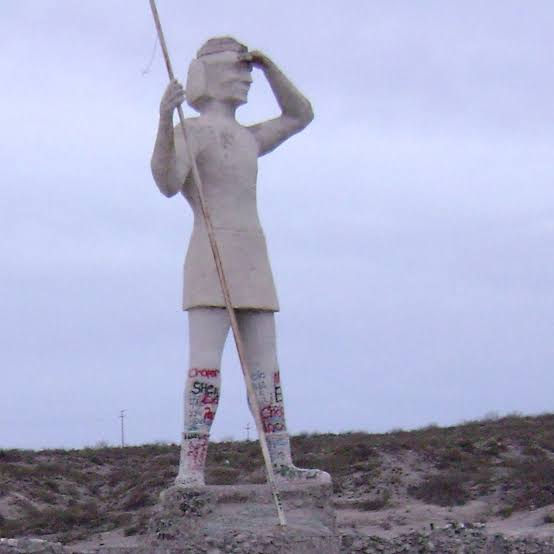
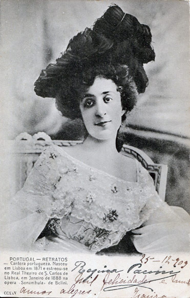
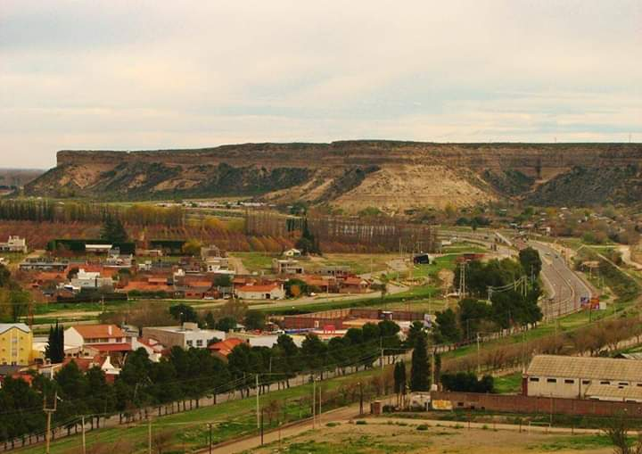
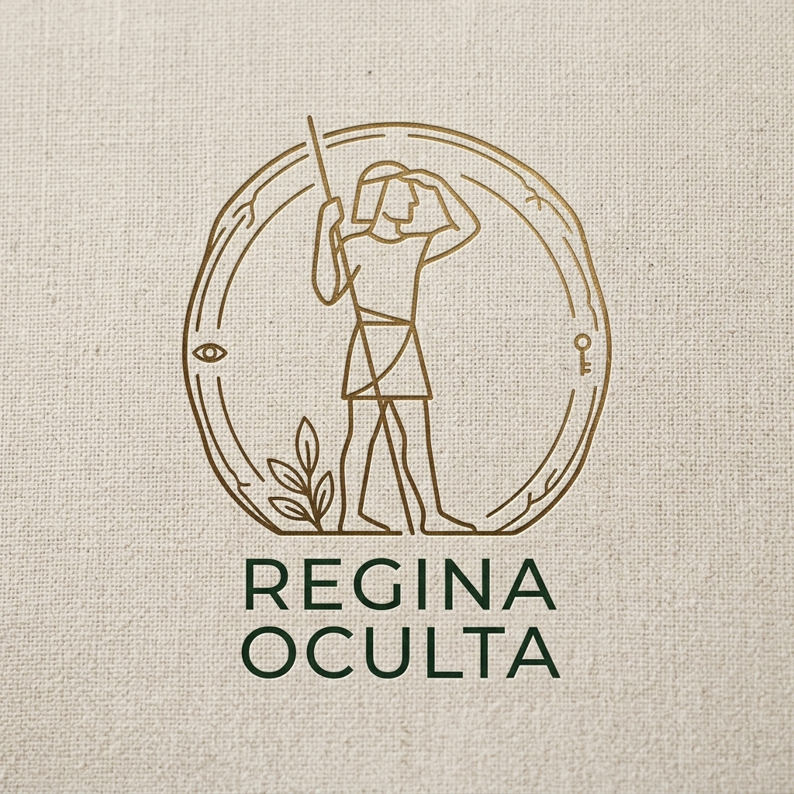

Noticias
Patrimonio, acontecimientos y novedades culturales.
Villa Regina · Río Negro
Historias, voces y memoria de una ciudad.
Descubrir la historiaRegina Oculta nace para reunir y preservar relatos, fotografías, documentos, testimonios, sonidos, videos y expresiones culturales vinculadas con Villa Regina.
Un archivo digital abierto para mirar el pasado, escuchar a quienes lo vivieron y comprender la ciudad que somos.
La historia también vive en las pequeñas escenas: una familia, una chacra, una calle, una estación, una fotografía o una conversación.
Explorar el archivo →“Las ciudades también se construyen con los recuerdos de quienes las habitaron.”
Próximamente: entrevistas y testimonios de vecinos de Villa Regina.
Una primera mirada al material que dará forma al archivo visual de Regina Oculta.




Patrimonio, acontecimientos y novedades culturales.
Documentales, entrevistas, videos y registros.
Arte, música, libros, exposiciones y actividades.
Regina Oculta puede crecer con el aporte de quienes guardan fotografías, documentos, relatos o recuerdos de la ciudad.
Compartir material